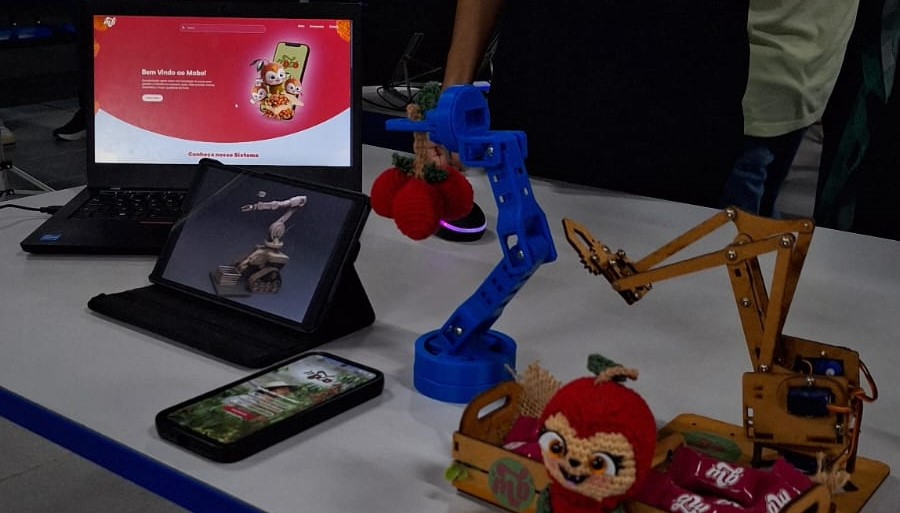
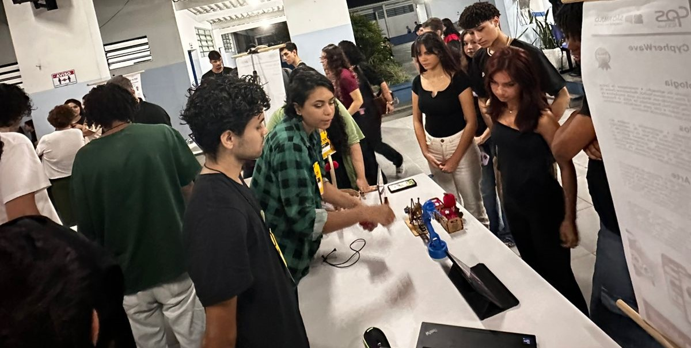
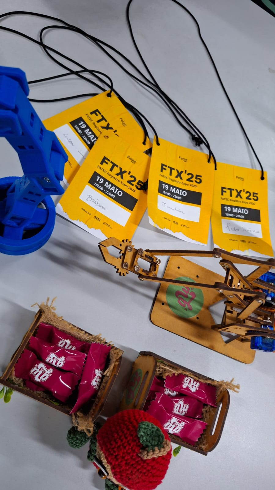
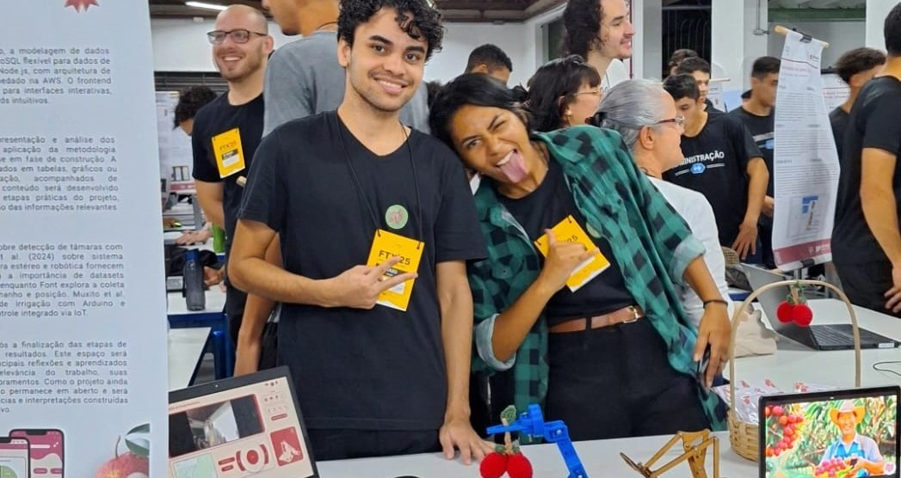

EXPOSIÇÃO FTX'25
Inovação em destaque no evento
A participação na FTX 2025 marcou um importante passo para a equipe CypherWave, consolidando o MOBO como uma solução tecnológica aplicada ao agronegócio moderno.
Projeto exposto ao público
Demonstração de IoT
Apresentação de Pitch
Troca de conhecimento


REGISTROS
Momentos da exposição



